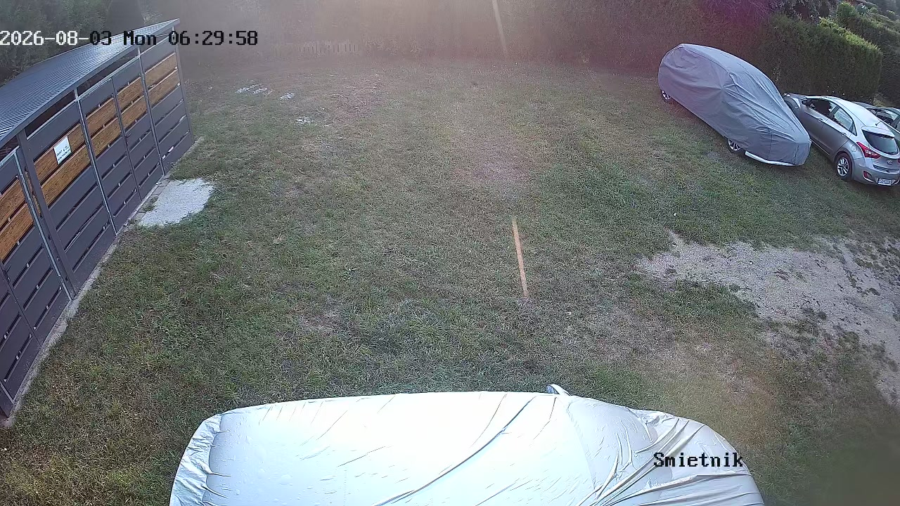
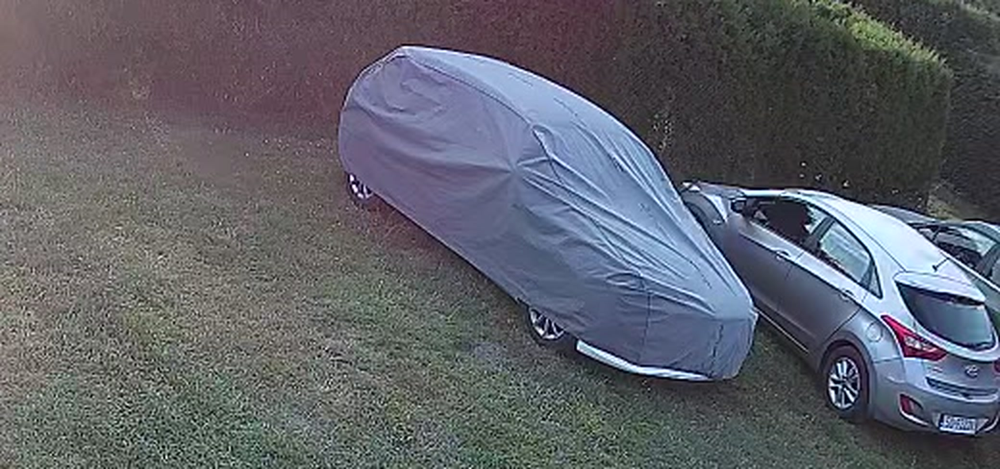
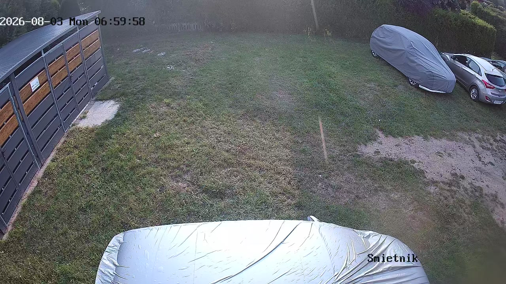
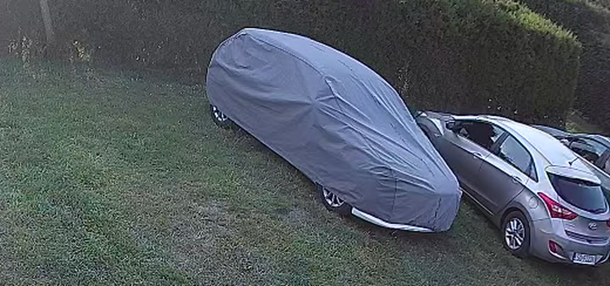

Rano 3 sierpnia — próba czytelności
Sprawdzam Twój pomysł: czy na porannej klatce widać ślady łap na dachach.
Najpierw pełny kadr, potem to samo powiększone cztery razy na obszar aut.
Powiedz, czy na powiększeniu dałoby się rozpoznać ślady — jeśli tak, robię to
dla każdego dnia z archiwum i dostajesz kalendarz nocy z kuną.

06:30 — pełny kadr

06:30 — powiększenie 4× na auta (to samo miejsce, gdzie szukaliśmy ruchu)

07:00 — pełny kadr

07:00 — powiększenie 4× na auta